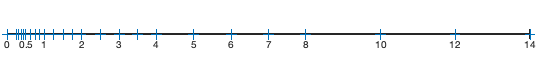

Code
today <- Sys.Date()
format(today, format="Revised: %B %d %Y")[1] "Revised: May 07 2024"Topics Covered:
What is a floating-point system?
What are the fundamental parameters describing a floating point system
What are roundoff errors?
What are cancellation Errors
Computational mathematics is different than “continuous” mathematics, with the main difference being that instead of having infinite precision, the arithmetic is both fixed and finite, due to the fact that we are working on a computer. This means that not all real numbers can be represented on a computer - and most real numbers can only be approximated.
To help us understand some of the complications, let’s review how we normally represent numbers in scientific notation. For example to represent the number 51.7538 in scientific notation we could write it as:
\[+ 0.517538 \cdot 10^2\] In this notation, the various components are given the following names:
| Name | Value |
|---|---|
| Sign | +/- |
| Base | 10 |
| Exponent | +2 |
| Significand (Mantissa) | 0.517538 |
The number of digits in the significand is known as the precision. This will become important in future discussions. It is also important to note that the scientific notation is not unique. We could just as easily have written:
\[+ 0.0517538 \cdot 10^3\]or any number of other ways, by changing the exponent. As a result, we usually restrict our mantissas to have the leading digit (most significant) be nonzero. These numbers are known as normalized numbers.
Remarks.
We can only store a finite number of the set of real numbers on any computer. At best we can expect a solution to be as accurate as the precision of that computer.
Every computer operation we do will result in intermediate results which are also only as accurate as we can store them.
These inaccuracies can accumulate further compromising the accuracy of the final result. These accumulated errors are known as roundoff errors. Some typical situations that cause roundoff include:
inaccurate additions of large sequences of numbers
taking the difference of two nearly equal numbers
inaccurate solution of ill-conditioned problems (more on this later).
We need to be aware of potential numerical pitfalls and code programs accordingly. A good numerical analyst is always on the lookout for these problems!
Let’s adapt our scientific notation for arithmetic on a computer. Specifically, instead of the usual base 10 system, we use a system with base 2 (binary). As before, let’s represent a number as follows:
\[ x = \pm (0.d_1d_2d_3 \ldots d_t)\cdot 2^{e} \]
for some exponent \(e\). Notice that when we write it in this form what we’re really saying is that
\[ x = \pm \Big ( \frac{d_1}{2^{1}} + \frac{d_1}{2^2} + \frac{d_1}{2^3} + \ldots \frac{d_1}{2^t} \Big) \cdot 2^{e} \]
The representation of a real number on a computer is called the floating point representation, and we will denote it by \(fl(x)\). Here again, we will assume that \(d_1 \neq 0.\)
With these changes in mind, let’s consider how to represent the finite set of floating points on a computer.
By a floating-point number system we mean a finite subset \(F = F(\beta, t, e_{min},e_{max})\), of the real numbers whose elements have the form:
\[ x = \pm m \cdot 2^{e-t+1} \]
Here \(\beta\) is the base (2 on almost all computers), \(t\) is the precision and \(e \in [e_{min}, e_{max}]\), and \(m\) is the significand satisfying \(m \leq 2^t - 1\).
There’s a +1 added to the exponent so as to be consistent with IEEE standard, which we will discuss later on. For now, you can just simply take it as part of the definition.
In order to ensure that we have a unique representation for each floating point number, we also make the assumption that \(m \geq \beta^{t-1},\) i.e. the leading digit of \(m\) is nonzero and hence it is normalized.
Example 4.1 Let’s see what this means on a toy floating point system. Suppose we have a system with \(\beta = 2, t=3, e_{min} = -2, e_{max}=3\). What does this look like?
The figure below depicts all of the positive numbers representable in our system \(F\).

There are some general remarks we can make about our floating-point system:
There are a total of 49 points: 24 positive, 24 negative, and 1 zero.
The numbers are equally spaced between each power of 2
The spacing increases by a factor of 2 at each power of 2.
There are several important numbers in a floating-point system that we will use a lot:
The unit roundoff (rounding unit) is defined by \[u = \frac{1}{2} \beta^{1-t}. \tag{4.1}\]
In our example,
\[u = \frac{1}{2} 2^{1-t} = \frac{1}{2} 2^{-2} = 0.125 .\] The unit roundoff is frequently used in error analysis.
Machine epsilon is defined by \[\epsilon = \beta^{1-t}. \tag{4.2}\] Machine epsilon, is frequently used in practice and as a means to denote very small quantities in our computations.
In our example,
\[u = 2^{1-t} = 2^{-2} = 0.25 .\]
The maximum number \(x_{max}\) is defined by \[x_{max} = \beta^{e_{max}}(\beta - \beta^{1-t}).\]
In our example,
\[x_{max} = 2^3 (2 - 2^{-2}) = 8 \cdot(2 -1/4) = 14.\]
The minimum number \(x_{min}\) is defined by \[x_{min} = \beta^{e_{min}} .\]
In our example,
\[x_{min} = 2^{-2} = 1/4 = 0.25. \]
Both the maximum and minimum value of \(x\) are important to know so that we have a better understanding of our computational results.
Unit roundoff is just \(2*\epsilon\), i.e. twice machine epsilon (for binary computers). You only need remember one of the two. For numerical analysts unit roundoff is slightly more important.
Since \(F\) only has a finite number of floating point numbers it can represent, most calculations will produce a result that needs to be mapped onto our field \(F\). There are two possible choices: chopping and rounding. In chopping, the computed result Is simply truncated to whatever precision is available. In rounding, we take as our result whichever floating point is nearer. If there’s a tie, we need a rule to break the tie, and normally we will round to the number that has an even last digit - round to even.
In terms of the notation we used above, chopping and rounding can be described as:
\[ fl(x) = \pm .d_1d_2d_3\cdots d_t \times \beta^{e} \]
Rounding:
\[fl(x) = \pm .d_1d_2d_3\cdots d_t \times \beta^{e} \quad d_t < \beta/2\] or
\[fl(x) = \pm (.d_1d_2d_3\cdots d_t + \beta^{1-t} ) \times \beta^{e} \quad d_t > \beta/2\]
In the case of a tie, one must also choose a tie-breaking rule.
There are several ways that one can round including, round down, round up, round towards zero, round to nearest. Most often when speaking about rounding we will mean round to nearest. In addition, the IEEE standard requires that the default rounding mode be round to nearest. In this case, we always round towards the nearest number and if there’s a tie, we take the number whose least significant bit is equal to zero.
The following table summarizes some of the main characteristics of floating point systems.
| Interpretation | Parameter | Value |
|---|---|---|
| Unit roundoff. Spacing of numbers between 1/2 and 1 | \(\large{u}\) | \(\large{\frac{1}{2}\beta^{1-t}}\) |
| Machine epsilon. Spacing of numbers between 1 and 2 | \(\large{\epsilon}\) | \(\large{\beta^{1-t}}\) |
| Largest floating point number representable by \(F\) | \(\large{x_{max}}\) | \(\large{\beta^{e_{max}}(\beta^{t}-1)}\) |
| Smallest normalized floating point number representable by \(F\) | \(\large{x_{min}}\) | \(\large{\beta^{e_{min}}}\) |
| Total number of floating point numbers representable by \(F\) | \(\large{ 2(\beta -1) \beta^{t-1}(e_{max}-e_{min} + 1) + 1}\) |
We will note in passing that it is possible to represent even smaller numbers below \(N_{min}\) through the use of what are known as subnormal numbers. However, this is beyond the scope of this introductory course. The interested reader can check out one of many references on this topic (e.g. Accuracy and Stability of Numberical Algorithms, 2nd ed., N. Higham (2002)).
today <- Sys.Date()
format(today, format="Revised: %B %d %Y")[1] "Revised: May 07 2024"